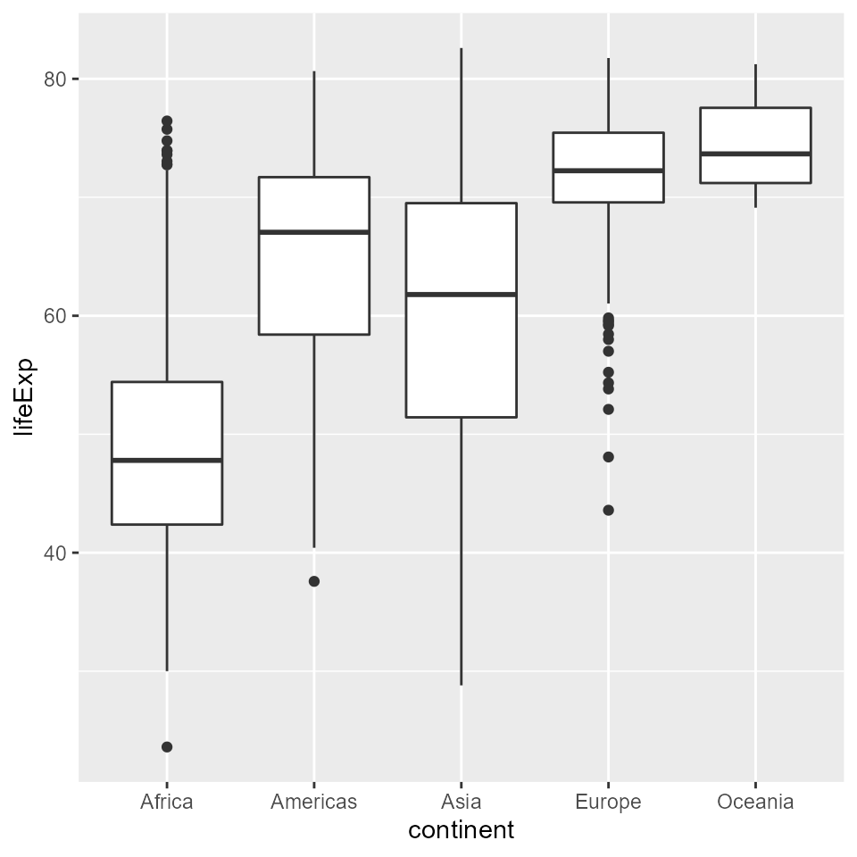
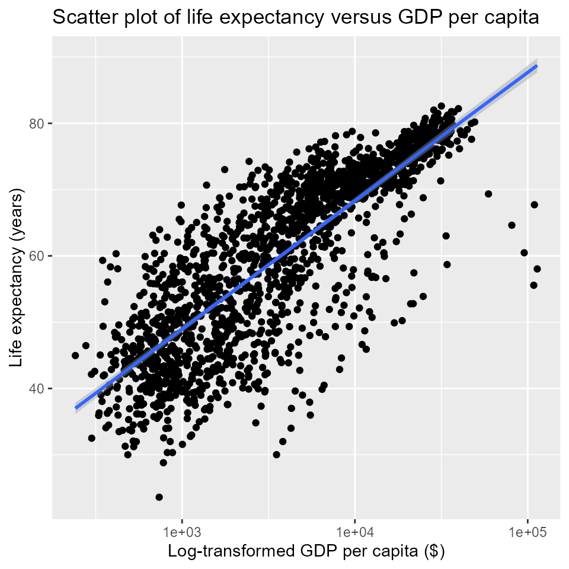

Part 1: Fundamentals of data import, structuring, and plotting in tidyverse
by Vikram B. Baliga, Andrea Gaede and Shreeram Senthivasan
Last updated on 2020-09-13 13:43:13
Source:vignettes/group-01_Fundamentals-data-wrangling-tidyverse.Rmd
group-01_Fundamentals-data-wrangling-tidyverse.RmdIntroduction
This vignette is Part 1 of 3 for an R workshop created for BIOL 548L, a graduate-level course taught at the University of British Columbia.
When the workshop runs, we split students into three groups with successively increasing levels of difficulty. We recommend everyone starts here and works through the code that follows. This vignette shows users how to load a clean data file into R and make boxplots and scatterplots. Once you are comfortable with the contents of this page, please feel free to move on to Part 2 and ultimately to Part 3 (which we recommend going through only after completing Part 2) here.
All code and contents of this vignette were written together by Vikram B. Baliga, Andrea Gaede and Shreeram Senthivasan.
Learning Objectives:
- Determine how to import and control data stored in different filetypes
- Understand the best practices for structuring data in
tidyverse/ggplot2 - Construct basic plots using
ggplot2
Load or install & load necessary packages
Before running the code below, make sure you have the necessary packages loaded. If you do not have the packages listed below installed on your computer, then download them from the CRAN site using install.packages() and then load them with library() as shown below.
library(gapminder) library(ggplot2) library(tidyr) library(dplyr) #> #> Attaching package: 'dplyr' #> The following objects are masked from 'package:stats': #> #> filter, lag #> The following objects are masked from 'package:base': #> #> intersect, setdiff, setequal, union library(tibble) library(readr) library(readxl)
Data sets
You can get all data used in this vignette (and the other two!) by downloading this zip file.
Importing and peeking at data:
Import data using base R command, and give it the name my_data
my_data <- read.csv("gapminder.csv") # In practise, read_csv() is often better
Take a look at your data
# Same as print(my_data) my_data
# Structure str(my_data) #> 'data.frame': 1704 obs. of 6 variables: #> $ country : chr "Afghanistan" "Afghanistan" "Afghanistan" "Afghanistan" ... #> $ continent: chr "Asia" "Asia" "Asia" "Asia" ... #> $ year : int 1952 1957 1962 1967 1972 1977 1982 1987 1992 1997 ... #> $ lifeExp : num 28.8 30.3 32 34 36.1 ... #> $ pop : int 8425333 9240934 10267083 11537966 13079460 14880372 12881816 13867957 16317921 22227415 ... #> $ gdpPercap: num 779 821 853 836 740 ... # Summarize columns summary(my_data) #> country continent year lifeExp #> Length:1704 Length:1704 Min. :1952 Min. :23.60 #> Class :character Class :character 1st Qu.:1966 1st Qu.:48.20 #> Mode :character Mode :character Median :1980 Median :60.71 #> Mean :1980 Mean :59.47 #> 3rd Qu.:1993 3rd Qu.:70.85 #> Max. :2007 Max. :82.60 #> pop gdpPercap #> Min. :6.001e+04 Min. : 241.2 #> 1st Qu.:2.794e+06 1st Qu.: 1202.1 #> Median :7.024e+06 Median : 3531.8 #> Mean :2.960e+07 Mean : 7215.3 #> 3rd Qu.:1.959e+07 3rd Qu.: 9325.5 #> Max. :1.319e+09 Max. :113523.1 # Get column names (good for wide datasets) names(my_data) #> [1] "country" "continent" "year" "lifeExp" "pop" "gdpPercap" # Get first 6 lines head(my_data) #> country continent year lifeExp pop gdpPercap #> 1 Afghanistan Asia 1952 28.801 8425333 779.4453 #> 2 Afghanistan Asia 1957 30.332 9240934 820.8530 #> 3 Afghanistan Asia 1962 31.997 10267083 853.1007 #> 4 Afghanistan Asia 1967 34.020 11537966 836.1971 #> 5 Afghanistan Asia 1972 36.088 13079460 739.9811 #> 6 Afghanistan Asia 1977 38.438 14880372 786.1134 # Get last 6 lines tail(my_data) #> country continent year lifeExp pop gdpPercap #> 1699 Zimbabwe Africa 1982 60.363 7636524 788.8550 #> 1700 Zimbabwe Africa 1987 62.351 9216418 706.1573 #> 1701 Zimbabwe Africa 1992 60.377 10704340 693.4208 #> 1702 Zimbabwe Africa 1997 46.809 11404948 792.4500 #> 1703 Zimbabwe Africa 2002 39.989 11926563 672.0386 #> 1704 Zimbabwe Africa 2007 43.487 12311143 469.7093
Arguments can be added to a function using commas
Note: arguments with the default setting are hidden, unless specified. Here n changes the default from 6 to 10 lines
head(my_data, n = 10) #> country continent year lifeExp pop gdpPercap #> 1 Afghanistan Asia 1952 28.801 8425333 779.4453 #> 2 Afghanistan Asia 1957 30.332 9240934 820.8530 #> 3 Afghanistan Asia 1962 31.997 10267083 853.1007 #> 4 Afghanistan Asia 1967 34.020 11537966 836.1971 #> 5 Afghanistan Asia 1972 36.088 13079460 739.9811 #> 6 Afghanistan Asia 1977 38.438 14880372 786.1134 #> 7 Afghanistan Asia 1982 39.854 12881816 978.0114 #> 8 Afghanistan Asia 1987 40.822 13867957 852.3959 #> 9 Afghanistan Asia 1992 41.674 16317921 649.3414 #> 10 Afghanistan Asia 1997 41.763 22227415 635.3414
The helpfile lists what arguments are available
?headA better import option using Tidyverse
my_data <- read_csv("gapminder.csv") #> Parsed with column specification: #> cols( #> country = col_character(), #> continent = col_character(), #> year = col_double(), #> lifeExp = col_double(), #> pop = col_double(), #> gdpPercap = col_double() #> ) # Cleaner import and print with read_csv, don't need head() my_data #> # A tibble: 1,704 x 6 #> country continent year lifeExp pop gdpPercap #> <chr> <chr> <dbl> <dbl> <dbl> <dbl> #> 1 Afghanistan Asia 1952 28.8 8425333 779. #> 2 Afghanistan Asia 1957 30.3 9240934 821. #> 3 Afghanistan Asia 1962 32.0 10267083 853. #> 4 Afghanistan Asia 1967 34.0 11537966 836. #> 5 Afghanistan Asia 1972 36.1 13079460 740. #> 6 Afghanistan Asia 1977 38.4 14880372 786. #> 7 Afghanistan Asia 1982 39.9 12881816 978. #> 8 Afghanistan Asia 1987 40.8 13867957 852. #> 9 Afghanistan Asia 1992 41.7 16317921 649. #> 10 Afghanistan Asia 1997 41.8 22227415 635. #> # … with 1,694 more rows # Note that words read in as `chr` not `factors`, this is good! str(my_data) #> tibble [1,704 × 6] (S3: spec_tbl_df/tbl_df/tbl/data.frame) #> $ country : chr [1:1704] "Afghanistan" "Afghanistan" "Afghanistan" "Afghanistan" ... #> $ continent: chr [1:1704] "Asia" "Asia" "Asia" "Asia" ... #> $ year : num [1:1704] 1952 1957 1962 1967 1972 ... #> $ lifeExp : num [1:1704] 28.8 30.3 32 34 36.1 ... #> $ pop : num [1:1704] 8425333 9240934 10267083 11537966 13079460 ... #> $ gdpPercap: num [1:1704] 779 821 853 836 740 ... #> - attr(*, "spec")= #> .. cols( #> .. country = col_character(), #> .. continent = col_character(), #> .. year = col_double(), #> .. lifeExp = col_double(), #> .. pop = col_double(), #> .. gdpPercap = col_double() #> .. ) # But underlying data is the same summary(my_data) #> country continent year lifeExp #> Length:1704 Length:1704 Min. :1952 Min. :23.60 #> Class :character Class :character 1st Qu.:1966 1st Qu.:48.20 #> Mode :character Mode :character Median :1980 Median :60.71 #> Mean :1980 Mean :59.47 #> 3rd Qu.:1993 3rd Qu.:70.85 #> Max. :2007 Max. :82.60 #> pop gdpPercap #> Min. :6.001e+04 Min. : 241.2 #> 1st Qu.:2.794e+06 1st Qu.: 1202.1 #> Median :7.024e+06 Median : 3531.8 #> Mean :2.960e+07 Mean : 7215.3 #> 3rd Qu.:1.959e+07 3rd Qu.: 9325.5 #> Max. :1.319e+09 Max. :113523.1
Other formats for import
my_data <- read_delim("gapminder.csv", ',') #> Parsed with column specification: #> cols( #> country = col_character(), #> continent = col_character(), #> year = col_double(), #> lifeExp = col_double(), #> pop = col_double(), #> gdpPercap = col_double() #> ) # Looks like a weird error my_data <- read_excel("gapminder.xlsx") #> New names: #> * `` -> ...2 #> * `` -> ...3 #> * `` -> ...4 #> * `` -> ...5 #> * `` -> ...6
Ways to clean up your data during import
# Inspect with head, or excel. We see two junk rows: head(my_data) #> # A tibble: 6 x 6 #> `Gapminder data` ...2 ...3 ...4 ...5 ...6 #> <chr> <chr> <chr> <chr> <chr> <chr> #> 1 43685 12423 <NA> <NA> <NA> <NA> #> 2 country continent year lifeExp pop gdpPercap #> 3 Afghanistan Asia 1952 28.801 8425333 779.4453145 #> 4 Afghanistan Asia 1957 30.332 9240934 820.8530296 #> 5 Afghanistan Asia 1962 31.997 10267083 853.10071 #> 6 Afghanistan Asia 1967 34.02 11537966 836.1971382 # This can be solved by adding an argument `skip` # is the number of rows to skip my_data <- read_excel("gapminder.xlsx", skip = 2) my_data <- read_csv("gapminder.csv",col_names = FALSE) #> Parsed with column specification: #> cols( #> X1 = col_character(), #> X2 = col_character(), #> X3 = col_character(), #> X4 = col_character(), #> X5 = col_character(), #> X6 = col_character() #> ) # Setting `col_names` to false made the column headers # row one and added dummy column names my_data #> # A tibble: 1,705 x 6 #> X1 X2 X3 X4 X5 X6 #> <chr> <chr> <chr> <chr> <chr> <chr> #> 1 country continent year lifeExp pop gdpPercap #> 2 Afghanistan Asia 1952 28.801 8425333 779.4453145 #> 3 Afghanistan Asia 1957 30.332 9240934 820.8530296 #> 4 Afghanistan Asia 1962 31.997 10267083 853.10071 #> 5 Afghanistan Asia 1967 34.02 11537966 836.1971382 #> 6 Afghanistan Asia 1972 36.088 13079460 739.9811058 #> 7 Afghanistan Asia 1977 38.438 14880372 786.11336 #> 8 Afghanistan Asia 1982 39.854 12881816 978.0114388 #> 9 Afghanistan Asia 1987 40.822 13867957 852.3959448 #> 10 Afghanistan Asia 1992 41.674 16317921 649.3413952 #> # … with 1,695 more rows
# We're now going to import the gapminder dataset # using the preferred read_csv() function my_data <- read_csv("gapminder.csv",col_names = TRUE) #> Parsed with column specification: #> cols( #> country = col_character(), #> continent = col_character(), #> year = col_double(), #> lifeExp = col_double(), #> pop = col_double(), #> gdpPercap = col_double() #> )
# This looks correct. Note: TRUE is the default # so was not needed above my_data #> # A tibble: 1,704 x 6 #> country continent year lifeExp pop gdpPercap #> <chr> <chr> <dbl> <dbl> <dbl> <dbl> #> 1 Afghanistan Asia 1952 28.8 8425333 779. #> 2 Afghanistan Asia 1957 30.3 9240934 821. #> 3 Afghanistan Asia 1962 32.0 10267083 853. #> 4 Afghanistan Asia 1967 34.0 11537966 836. #> 5 Afghanistan Asia 1972 36.1 13079460 740. #> 6 Afghanistan Asia 1977 38.4 14880372 786. #> 7 Afghanistan Asia 1982 39.9 12881816 978. #> 8 Afghanistan Asia 1987 40.8 13867957 852. #> 9 Afghanistan Asia 1992 41.7 16317921 649. #> 10 Afghanistan Asia 1997 41.8 22227415 635. #> # … with 1,694 more rows
Using qplot to make a histogram, scatter plot, or dot plot
# This command makes a histogram of the `lifeExp` # column of the `my_data` dataset qplot(x = lifeExp, data = my_data) #> `stat_bin()` using `bins = 30`. Pick better value with `binwidth`.

# The same function here makes a scatter plot qplot(x = gdpPercap, y = lifeExp, data = my_data)

# The same function here makes a dot plot because # the x axis is categorical qplot(x = continent, y = lifeExp, data = my_data)

How can the same function make three different classes of plots?
One of the hidden arguments is geom which specifies the type of plot. The default is auto which leads to a guess of the plot type based on the data type(s) in the column(s) you specify.
Type ?qplot in the console to read the qplot documentation
Now let’s specify the type of plot explicitly
qplot(x = lifeExp, data = my_data, geom = 'histogram') #> `stat_bin()` using `bins = 30`. Pick better value with `binwidth`.

qplot(x = gdpPercap, y = lifeExp, data = my_data, geom = 'point')

# Note that we are now specifying boxplot instead of point plot qplot(x = continent, y = lifeExp, data = my_data, geom = 'boxplot')

How to quickly make plots with qplot() that are easy to interpret
Now let’s change the number of bins in a histogram and make the plot prettier
# The hidden argument `bins` has a default valute of 30 qplot(x = lifeExp, data = my_data, geom = 'histogram') #> `stat_bin()` using `bins = 30`. Pick better value with `binwidth`.

# This changes the number of bins to 10 qplot(x = lifeExp, bins = 10, data = my_data, geom = 'histogram')
# Alternatively you can choose the width you want the bins to have qplot(x = lifeExp, binwidth = 5, data = my_data, geom = 'histogram')
# Let's add a title qplot(x = lifeExp, binwidth = 5, main = "Histogram of life expectancy", data = my_data, geom = 'histogram')
# Let's add an x axis label qplot(x = lifeExp, binwidth = 5, main = "Histogram of life expectancy", xlab = "Life expectancy (years)", data = my_data, geom = 'histogram')

# Let's add a y axis label qplot(x = lifeExp, binwidth = 5, main = "Histogram of life expectancy", xlab = "Life expectancy (years)", ylab = "Count", data = my_data, geom = 'histogram')

# This format is easier to read, but otherwise exactly the same. # The convention is to break lines after commas. qplot(x = lifeExp, binwidth = 5, main = "Histogram of life expectancy", xlab = "Life expectancy (years)", ylab = "Count", data = my_data, geom = 'histogram')
Log scale & trendline
Let’s apply a log scale and add a trendline to a scatter plot
# Note that x axis is compressed qplot(x = gdpPercap, y = lifeExp, data = my_data, geom = 'point')

# Here the x axis is log transformed qplot(x = gdpPercap, y = lifeExp, log = 'x', data = my_data, geom = 'point')

# Let's add a trendline to the data as well. # The linear regression model (`lm`) will be added on # top of our previous plot qplot(x = gdpPercap, y = lifeExp, log = 'x', main = "Scatter plot of life expectancy versus GDP per capita", xlab = "Log-transformed GDP per capita ($)", ylab = "Life expectancy (years)", data = my_data, # The following line adds a `smooth` trendline # We want our regression to be a linear model, or `lm` method = 'lm', # the `c()` function allows us to pass multiple variables # to the `geom` argument geom = c('point','smooth')) #> `geom_smooth()` using formula 'y ~ x'
